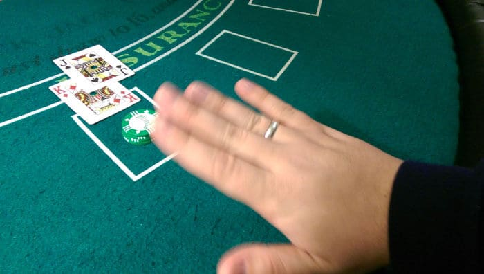
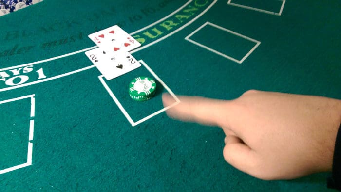
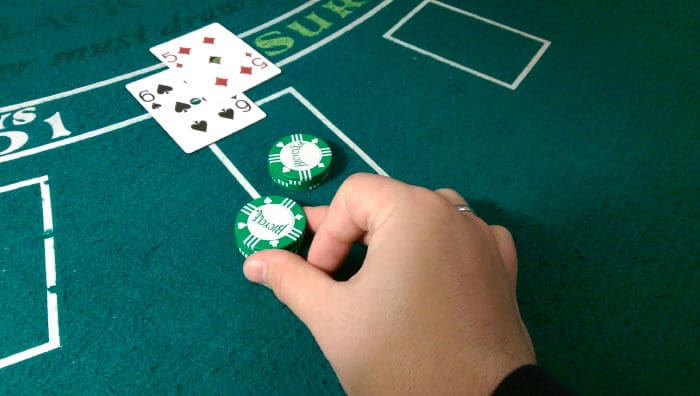
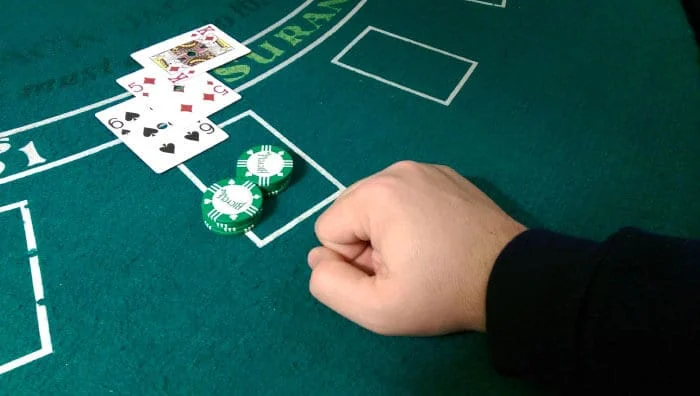
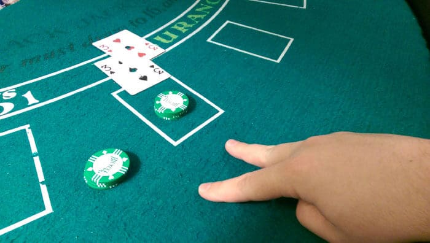
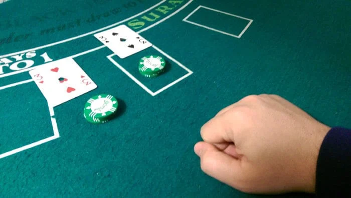
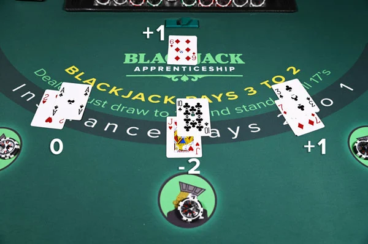
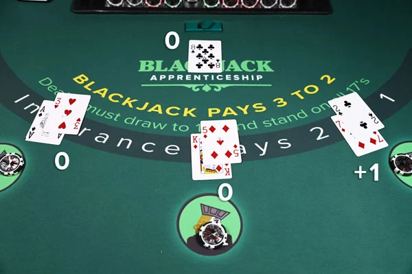
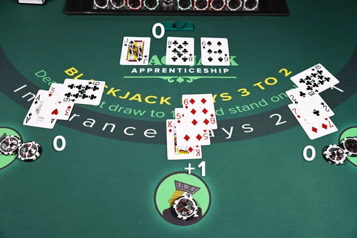
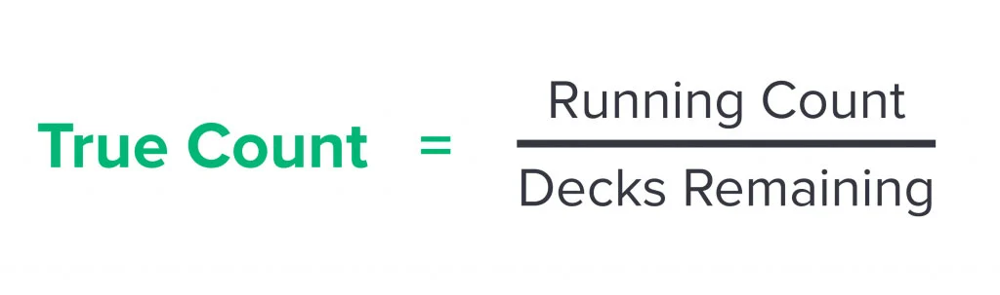

Pomoč pri igranju Blackjacka
Cilj pri Blackjacku je premagati delivca.
Kako premagamo delivca?
- Če imamo seštevek točk, ki je višji od seštevka delivca
- Če seštevek točk pri delivcu preseže 21
- Če že pri prvih dveh kartah zberemo 21 točk, delivcu pa tega ne uspe
Kako nas lahko delivec premaga?
- Seštevek točk naših kart preseže 21
- Seštevek točk delivca je ob koncu kroga večji od našega
Za razliko od nekaterih drugih iger s kartami, pri Blackjacku vsak igralec igra zase in ni odvisen od morebitnih drugih igralcev. Vsak posebej tekmuje proti delivcu.
Kako točkujemo karte?
Za igranje se uporablja komplet 52 standardnih igralnih kart, barve kart niso pomembne.
- Karte 2 do 10 so vredne 2 do 10 točk
- Fant, kraljica in kralj so vredni 10 točk
- Pri asu lahko izbiramo med vrednostjo 1 ali 11, odvisno od situacije v kateri smo
Kako poteka igra Blackjacka?
1. Igralec vplača začetno stavo
Začetna stava je lahko visoka ali nizka, glej Kaj so hi/low stave.
2. Delivec razdeli karte
Vsak igralec od delivca prejme eno karto, ki je vidna vsem igralcem. Ko vsi prejmejo po eno karto, podeli eno karto še sebi, ta karta zaenkrat ni vidna nobenemu. Potem vsakemu od igralcev podeli po še eno karto. Prav tako sebi podeli še eno karto in jo obrne tako, da jo vsi vidijo. Sedaj imajo vsi po dve karti in igra se lahko prične.
 Miza ob začetni razdelitvi kart
Miza ob začetni razdelitvi kart
3. Igralec izbere potezo
Delivec začne krog z igralcem na svoji levi. Vaši dve karti sta vidni vsem. Ko ste na vrsti, seštejete število točk vaših kart, katerih seštevek mora biti med 4 in 21. Če vam delivec že v prvem krogu podeli karto z 10 točkami, zraven pa še asa, pomeni da ste dobili Blackjack! Čestitke! Takoj se vam izplača 1,5-kratno vrednost vaše začetne stave (pod pogojem, da delivec istočasno ne dobi Blackjacka). Če delivec istočasno dobi Blackjack, ne dobite izplačila, ampak tudi ne izgubite začetne stave (t. i. "push").
Če niti vi, niti delivec nimate Blackjacka, bo delivec od vsakega igralca zahteval odločitev. Ko ste na vrsti se lahko odločite za eno od petih možnosti:
Stand - Pomeni, da ste zadovoljni s kartami, ki jih imate v roki in ne želite narediti nobene spremembe. Delivec bo nadaljeval k naslednjemu igralcu.
 StandHit - S to potezo od delivca zahtevate dodatno karto. Potezo lahko ponavljate dokler ne presežete seštevka 21 točk ali s potezo Stand igro prepustite naslednjemu igralcu.
 HitDouble - Delivec vam podeli eno dodatno karto, hkrati pa se podvoji tudi vaša začetna stava. Nekatere igralnice dovoljujejo tudi vrednosti manjše od podvojitve.
 Double  DoubleSplit - V primeru, da vam je delivec podelil dve karti z enako vrednostjo točk, ju lahko razdelite v dve roki in tudi povišate njuno začetno stavo.
 Split  SplitNajboljšo potezo izberemo na podlagi kart, ki nam jih kaže delivec.
4. Delivec izbere potezo
Delivec vedno igra po pravilih casinoja. Hit-a dokler ima manj ali enako 16. Standa na 17 ali več. Če ima "soft 17" (AS + 5) lahko hit-a, če je v pravilih casinoja.
Kaj so hi/low stave?
High/low oziroma visoke/nizke stave je način izbire stave. In sicer je naša izbira odvisna od štetja kart. Če je varijanca v našo prid izberemo visoko stavo, če ni izberemo nizko. Nizka stava je ponavadi nekje blizu minimalne, visoka pa odvisna od nas. Obe vrednosti moramo malo spreminjati, saj če smo očitni z igranjem na ta način nas casino hitreje opazi kot števca kart.
Kako šteti karte?
1.Dodeli vrednost vsaki karti
Uporabimo metodo Hi-Lo, ki dodeli vrednosti:
- 2-6 = +1
- 7-9 = 0
- 10-As = -1
2.Tekoče štetje
Ko štejemo karte upoštevamo vsako karto, ki pride na mizo. S tem dobimo našo tekoč števec.
Primer 1: Tekoč števec za to rundo je 0. 
Primer 2: Tekočo števec za to rundo je +1. 
Primer 3: Tekočo števec za to rundo je +1. 
3.Pravi števec
Da bi cazinoji preprečili štetje kart so začeli uporabljati tako imenovane čevlje. Čevelj je skupek več kompletov kart, iz katerega se delijo karte. Da obhodimo to prepreko pretvorimo naš tekoči števec v pravi stevec..
Če imamo tekoč števec +5 pri 6-ih kompletih kart v čevlju je čisto drugačna zgodba kot imeti +5 tekoči števec pri 1 kompletu kart. V prvem primeru imamo manj kot 1 višjo karto na kup kart. Medtem ko pri 1 kupu to pomeni da imamo 5 več visokih kart kot nizkih.
Upoštevati število kart v čevlju nam da pravi count, katerega uporabimo za spreminjanje stave. izračunamo ga po naslednji formuli:  Primer 1: Če je naš tekoč števec 10 in imamo še 5 kupov kart v čevlju, je naš pravi števec 10 % 5 = 2 Primer 2: Če je naš tekoč števec -7 in imamo še 2 kupa kart v čevlju, je naš pravi števec -7 % 2 = -3
4.Varijeranje stave
Z uporabo pravega števca vemo kdaj imamo prednost pred delivcem in posledično kdaj se splača staviti več in kdaj manj.
Več informacij o Blackjacku